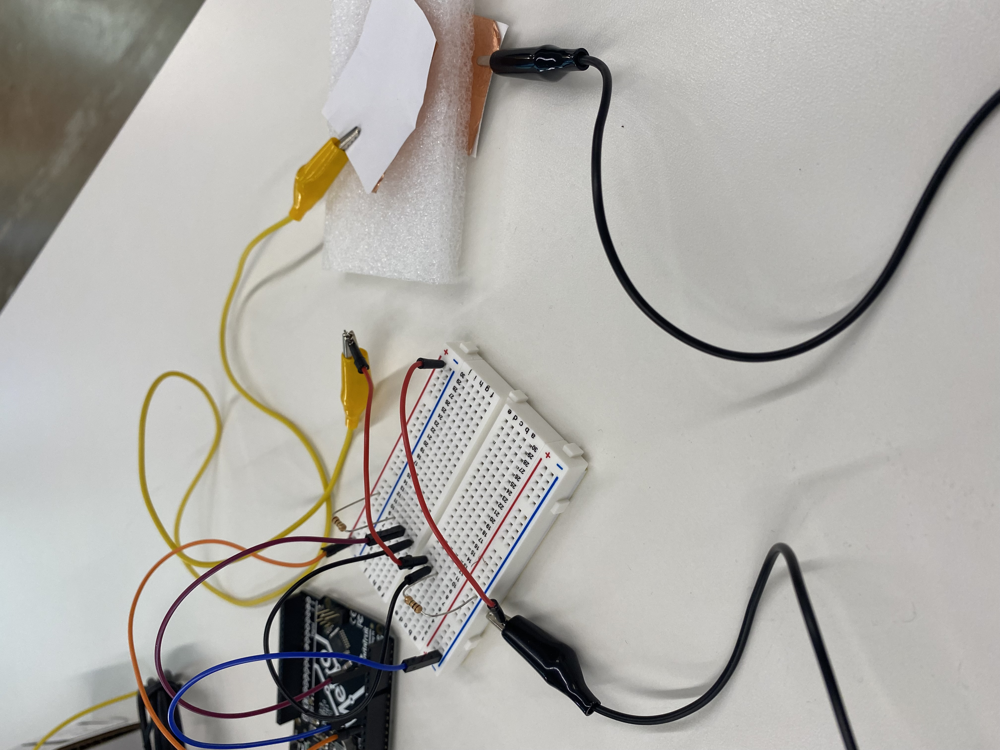
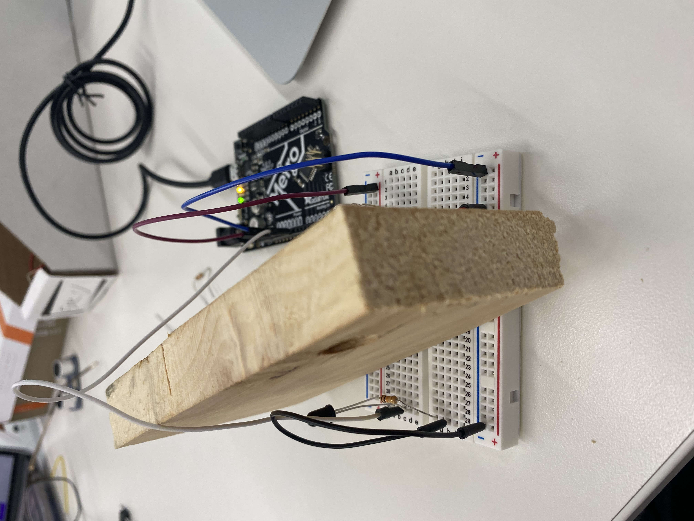
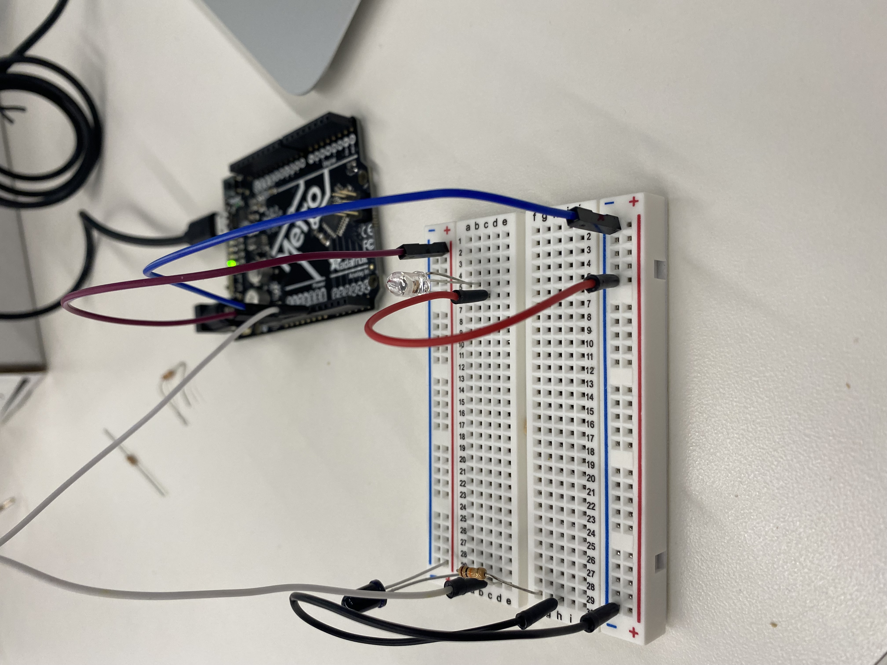

<a onclick="history.back(1)">Go Back</a>
###Class 6: Electric input device
I made a pressure censor with foam and 2 copper stickers. at first I found that it worked quite well. i was pleasently suprised I expected it to not work its just copper with some foam.

(put video here)
in my specific case the max i reached was about 320 unpsecified units of force and the base average was 100
one of the sensors I used was the IR sensor. I think this sensor was pretty easy to set up in comparason to other sensors ive seen used by my piers. without the shield the sensor doesnt messure how long something is from the sensors anymore, instead it just messure how far the Phototransistor is from the IR LED.

